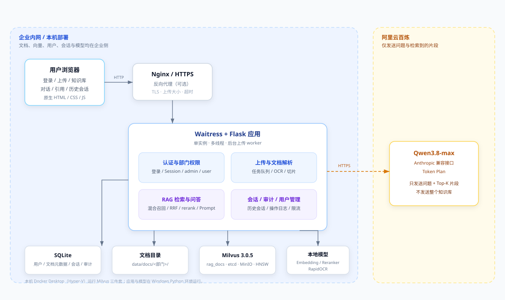
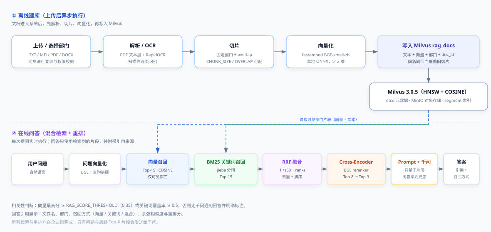
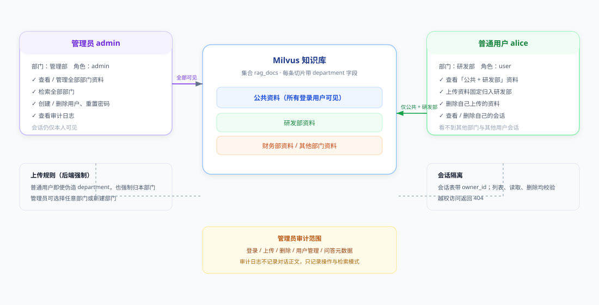
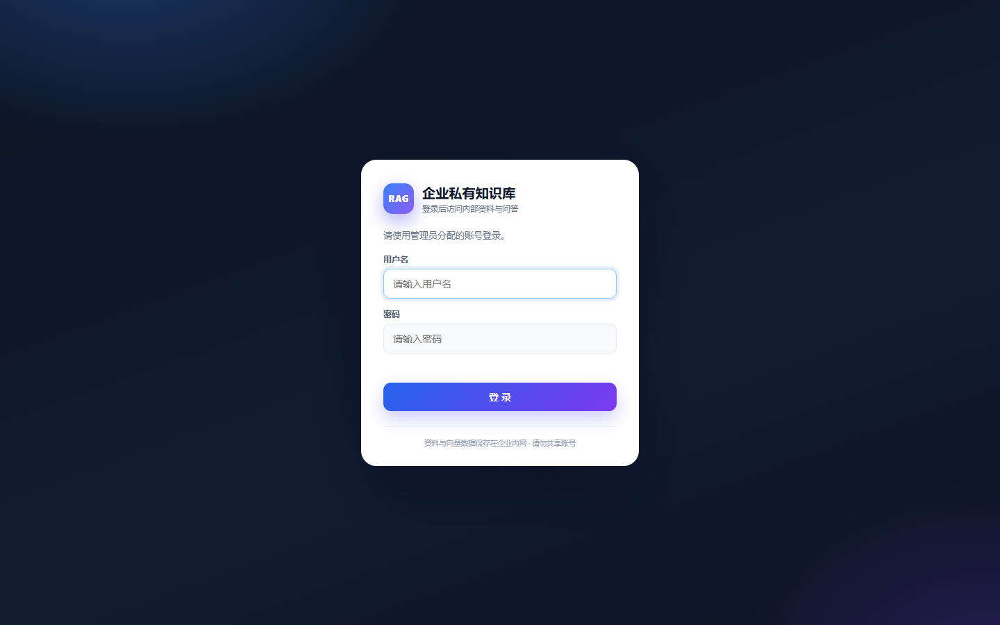
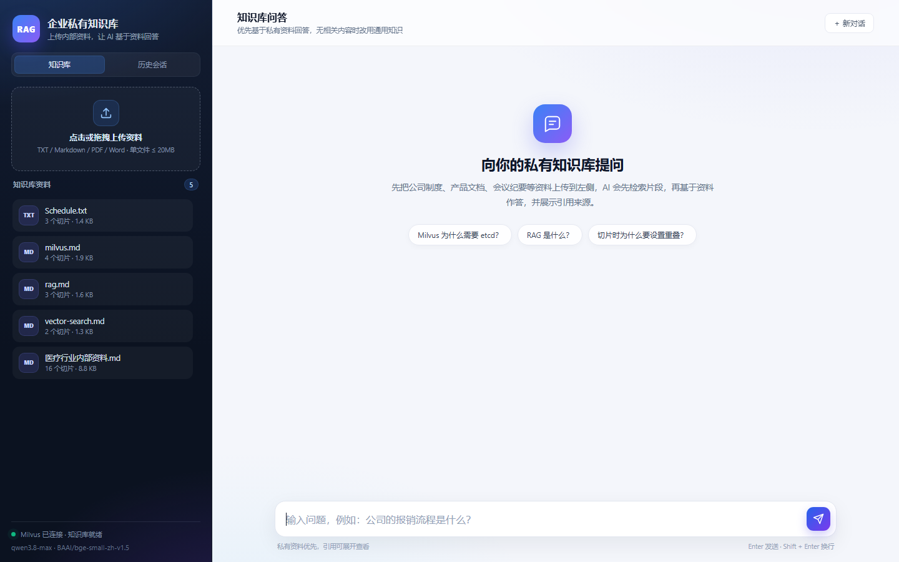
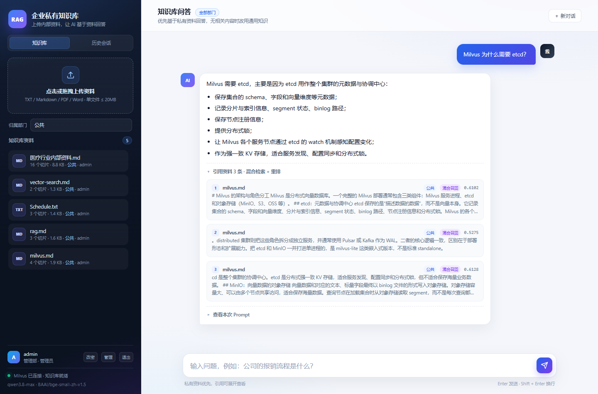
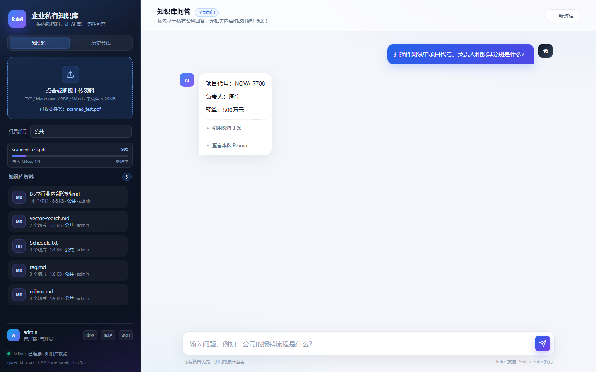
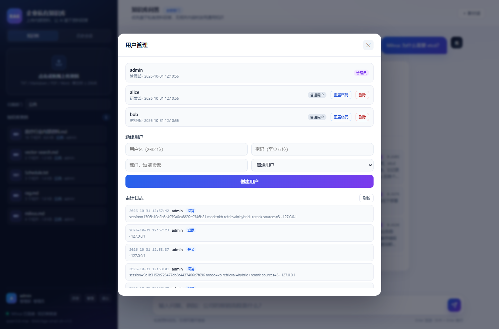
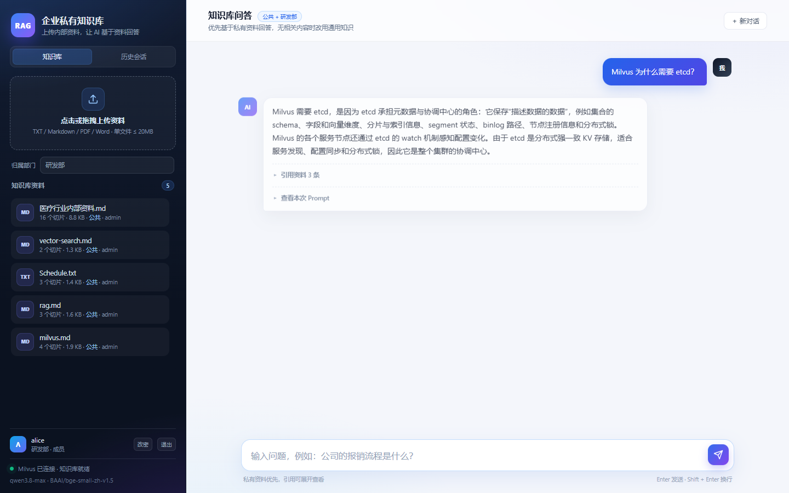

项目摘要
一句话概括：让企业内部资料“找得到、答得准、可追溯、可管控”。
要解决的问题
企业知识散落在 PDF、Word、扫描件和共享盘里；通用大模型不了解内部资料，直接提问容易编造；公开搜索无法访问私有数据。
我们做的方案
私有化 RAG：文档上传 → OCR / 解析 → 切片 → 向量化 → Milvus；提问时混合检索 + 重排，再交给千问基于资料回答。
带来的价值
答案有引用、可核验；按部门隔离资料；会话与审计可追踪；扫描件也能入库；部署轻量，适合中小企业内网。
项目背景与问题定义
为什么企业需要一个“私有知识库 + RAG”，而不是直接使用通用大模型。
企业知识管理的四个痛点
- 资料分散：制度、产品文档、会议纪要分布在 PDF、Word、扫描件和共享盘。
- 查找低效：关键词搜索只能匹配字面，无法理解“报销标准是多少”这类自然语言问题。
- 大模型幻觉：通用模型不知道企业内部事实，直接回答容易编造。
- 权限缺失：不同部门资料不能互相可见，公开搜索工具无法满足私有化要求。
为什么普通方案不够
- 只用大模型：没有内部知识，回答不可信，也无法给出出处。
- 只用关键词搜索：无法处理同义表达、长问题和跨段落信息。
- 直接上传到公有云：数据出境，权限和审计不可控。
- 传统知识库：需要人工整理目录和标签，维护成本高。
产品定位与目标用户
面向中小企业内网的私有知识问答平台，强调中文、私有化、低门槛和可管控。
| 角色 | 典型诉求 | 系统提供的能力 |
|---|---|---|
| 企业管理员 | 管理用户、部门、资料和审计；确保数据不越权。 | 全部资料可见；创建/删除用户、重置密码；查看审计日志；上传公共资料。 |
| 部门成员 | 快速查找本部门和公共制度、产品资料。 | 自然语言问答；公共 + 本部门资料检索；上传本部门资料；查看自己的历史会话。 |
| 知识维护者 | 持续上传新文档、替换旧版本、补充扫描件。 | 异步上传进度；同名同部门覆盖；扫描 PDF 自动 OCR；单文档删除。 |
私有化
文档、向量、用户和会话都在企业侧；只有问题与 Top-K 片段发送给千问。
中文优化
BGE 中文 embedding、jieba 分词、BM25、中文 reranker，针对中文资料设计。
可追溯
每条回答展示来源文件、部门、召回方式、相似度和重排分。
可管控
登录、角色、部门隔离、登录限流、审计日志、备份脚本。
功能全景
从知识入库、问答检索到组织权限和运维审计的完整闭环。
知识资产管理
- 支持 TXT、Markdown、PDF、Word (.docx)
- 扫描版 PDF 自动 OCR（RapidOCR）
- 异步上传任务 + 实时进度条
- 同名同部门自动覆盖旧切片
- 按部门存储：
data/docs/<部门>/ - 单文档删除，向量同步删除
企业问答
- 向量 + BM25 双路召回
- RRF 融合 + BGE cross-encoder 重排
- 回答只基于检索片段，展示 Top-3 引用
- 无相关内容时调用千问通用知识，并明确标注
- 可展开查看实际 Prompt
- 多轮会话、历史会话恢复
组织与权限
- 账号密码登录 + Session Cookie
- admin / user 两种角色
- 普通用户只看「公共 + 本部门」
- 上传强制归本部门（后端校验）
- 会话按用户隔离，越权返回 404
- 管理员用户管理、重置密码
运维与审计
- 登录失败限流（5 次 / 10 分钟 → 锁定 10 分钟）
- 审计日志：登录、上传、删除、用户管理、问答元数据
- 备份脚本：SQLite + 文档 + 会话密钥
- Waitress 生产模式 + Nginx/HTTPS 示例
- 健康检查：Milvus、集合、模型、检索模式
系统架构
浏览器 → Nginx / Waitress → Flask 应用 → SQLite / Milvus / 本地模型 / 千问。

应用层
Waitress + Flask 提供页面、认证、上传、RAG 问答、会话、审计和用户管理 API；单实例多线程，后台上传 worker 串行处理任务。
数据层
SQLite 保存用户、文档元数据、会话和审计；Milvus 保存切片、向量、部门和 doc_id；原始文件按部门存放在 data/docs。
模型层
本地运行 BGE 中文 embedding、BGE reranker 和 RapidOCR；千问通过 Anthropic 兼容接口调用，用于最终生成回答。
RAG 数据流
离线建库与在线问答两条链路；核心是“先检索证据，再生成答案”。

离线建库
- 上传文件并选择归属部门（普通用户固定本部门）。
- PDF 先读文本层；文本过少的页面渲染成图片交给 RapidOCR。
- 按固定窗口 + overlap 切片，保留上下文。
- 用 BGE-small-zh-v1.5 生成 512 维向量。
- 写入 Milvus，切片带 source、department、doc_id。
在线问答
- 问题向量化，按用户可见部门检索 Top-15。
- 同时用 jieba + BM25 做关键词召回 Top-15。
- RRF 融合去重，再用 BGE reranker 对 Top-8 精排。
- 取 Top-3 拼 Prompt，调用千问生成回答。
- 返回答案 + 文件名 + 部门 + 召回方式 + 相似度/重排分。
混合检索与重排
向量召回保证语义，BM25 保证关键词命中，RRF 融合，reranker 精排。
为什么需要混合检索
纯向量检索擅长语义相似，但对编号、专有名词、缩写和精确关键词不够敏感；纯关键词检索又无法理解同义表达。双路召回可以互补。
- 向量召回：Milvus HNSW + COSINE，Top-15。
- 关键词召回：jieba 分词 + BM25，Top-15。
- RRF：
score = Σ 1 / (60 + rank)。 - 重排：BGE cross-encoder 对 Top-8 打分，取 Top-3。
相关性判断与兜底
避免“检索到无关片段却强行回答”和“知识库没有资料时拒答”两种极端。
- 向量最高分 ≥
RAG_SCORE_THRESHOLD（默认 0.35）视为相关。 - 或关键词覆盖率 ≥
KEYWORD_COVERAGE_THRESHOLD（默认 0.5）。 - 否则调用千问通用知识回答，并标注“不是企业资料”。
- 若模型回答“资料中没有提到”，自动二次调用千问兜底。
| 参数 | 默认值 | 作用 |
|---|---|---|
HYBRID_DENSE_TOP_N | 15 | 向量召回候选数 |
HYBRID_BM25_TOP_N | 15 | BM25 关键词召回候选数 |
RRF_K | 60 | RRF 融合常数 |
RERANK_TOP_N | 8 | 送入 reranker 的候选数 |
TOP_K | 3 | 最终引用与 Prompt 片段数 |
RAG_SCORE_THRESHOLD | 0.35 | 向量相关性阈值 |
KEYWORD_COVERAGE_THRESHOLD | 0.5 | 关键词覆盖率阈值 |
权限与部门隔离
管理员看全局，普通用户只看公共 + 本部门；上传与会话都有后端校验。

| 能力 | 管理员 admin | 普通用户 user |
|---|---|---|
| 查看公共资料 | ✓ | ✓ |
| 查看本部门资料 | ✓ | ✓ |
| 查看其他部门资料 | ✓ | ✗ |
| 上传资料 | 任意部门 | 仅本部门（后端强制） |
| 删除资料 | 全部 | 仅自己上传 |
| 会话历史 | 仅本人 | 仅本人 |
| 用户管理 / 重置密码 | ✓ | ✗ |
| 审计日志 | ✓ | ✗ |
技术栈
选择原则：中文效果优先、可私有化、部署轻量、依赖可控。
| 层次 | 技术 | 版本 / 模型 | 用途与选择理由 |
|---|---|---|---|
| 运行时 | Python | 3.13.3 | 生态成熟，便于 Milvus、ONNX、OCR、Web 集成。 |
| Web 框架 | Flask | 3.1.3 | 轻量、路由清晰，适合中小型私有应用。 |
| WSGI 服务器 | Waitress | 3.0.2 | Windows 友好的生产级 WSGI 服务器，替代 Flask 开发服务器。 |
| 前端 | 原生 HTML / CSS / JavaScript | — | 无构建步骤，部署简单；自定义聊天、上传进度、引用与审计界面。 |
| 向量数据库 | Milvus Standalone | 3.0.5 | HNSW + COSINE；支持标量字段过滤，实现部门隔离。 |
| Milvus 依赖 | etcd / MinIO | etcd 3.5.25 / MinIO RELEASE | etcd 存元数据与协调；MinIO 存 binlog 和对象数据。 |
| 中文 Embedding | fastembed + BAAI/bge-small-zh-v1.5 | fastembed 0.9.1 / 512 维 | 本地 ONNX，免 API Key，中文语义检索效果好，模型已离线缓存。 |
| 文档解析 | pypdf / python-docx | 6.21.4 / 1.2.0 | 提取 PDF 文本层与 Word 段落、表格。 |
| 扫描件 OCR | RapidOCR + pypdfium2 | 1.2.3 / 5.14.0 | 模型随 pip 包自带，不依赖 HuggingFace；中文扫描件约 0.8 秒/页。 |
| 关键词召回 | jieba + rank-bm25 | 0.42.1 / 0.2.2 | 中文分词 + BM25，补齐编号、缩写和专有名词召回。 |
| Cross-Encoder 重排 | fastembed + BAAI/bge-reranker-base | ONNX 量化版 / 约 279MB | 对融合后的候选精排；模型从 ModelScope 下载到项目内。 |
| 大模型 | 阿里云百炼 Qwen3.8-max | Anthropic 兼容 Token Plan | 中文生成质量好；只发送问题与 Top-K 片段。 |
| 业务数据库 | SQLite（WAL） | Python 标准库 | 用户、文档元数据、会话、审计；零运维，适合中小团队。 |
| 容器化 | Docker Compose | Docker Desktop / Hyper-V | 一键启动 Milvus、etcd、MinIO。 |
| 反向代理 | Nginx（示例） | deploy/nginx.conf | HTTPS、上传大小限制、超时配置；可按企业环境启用。 |
部署架构与运行方式
开发用 Flask，生产用 Waitress；Milvus 由 Docker Compose 管理。
开发模式
适合调试和单机验证。
cd /d E:\Java_code\RAG-demo
call .venv\Scripts\activate.bat
docker compose up -d
python app.py生产模式
Waitress 多线程；前面可挂 Nginx 做 HTTPS。
start_web_prod.bat
:: 或
python serve.py| 部署项 | 说明 |
|---|---|
| Milvus | docker compose up -d；etcd、MinIO、milvus-standalone 三个容器；数据在 ./volumes/。 |
| 应用 | Waitress 监听 0.0.0.0:8000；线程数由 WEB_THREADS 控制。 |
| 反向代理 | deploy/nginx.conf 提供 HTTP/HTTPS 示例；上传上限 30MB，读超时 300s。 |
| 单实例约束 | 上传任务队列、登录限流在内存中，当前设计为单实例运行。 |
| 数据位置 | data/app.db、data/docs/<部门>/、data/.secret_key、Milvus ./volumes/。 |
界面展示
登录、知识库工作台、混合检索问答、上传进度、用户管理与审计。






安全与运维
认证、限流、审计、备份与数据边界。
认证与会话
- Werkzeug 密码哈希（scrypt），不保存明文。
- Flask Session Cookie：HttpOnly、SameSite=Lax、7 天有效期。
- 未登录 API 返回 401；页面跳转登录页。
- 登录失败 5 次 / 10 分钟 → 锁定 10 分钟（内存限流）。
权限与审计
- Milvus 检索按 department 过滤，后端强制。
- 上传部门由后端强制，普通用户无法伪造。
- 会话、文档删除均校验所有者/管理员。
- 审计日志记录登录、上传、删除、用户管理、问答元数据。
数据边界
- 文档、向量、用户、会话、审计均在企业侧。
- 发送给千问的只有问题与最终 Top-K 片段。
- 如果要求完全不出内网，需要替换为本地/私有化 LLM。
- Nginx + HTTPS 建议用于正式内网访问。
备份与恢复
python backup.py生成 zip。- 包含
data/app.db、data/docs/、data/.secret_key。 - 恢复：停止服务 → 解压覆盖
data/→ 重启。 - 向量可从文档重新入库；完整 Milvus 备份使用 milvus-backup。
测试与验收
功能、权限、检索、OCR、异步任务、生产部署均通过实测。
| 测试场景 | 操作 / 输入 | 结果 |
|---|---|---|
| 登录 / 未登录拦截 | 访问首页与 API | 通过 未登录跳转登录页，API 返回 401。 |
| 部门隔离 | alice 上传时伪造 department=财务部 | 通过 后端强制归研发部；bob 看不到该资料。 |
| 会话隔离 | bob 访问 alice 的会话 ID | 通过 返回 404；会话列表仅本人可见。 |
| 扫描版 PDF OCR | 图片型 PDF（NOVA-7788 / 周宁 / 500 万） | 通过 OCR 正确，问答引用来源正确。 |
| 异步上传进度 | 上传扫描 PDF | 通过 进度 2% → 54% → 79% → 90% → 100%。 |
| 混合检索 + rerank | “Milvus 为什么需要 etcd？” | 通过 retrievalMode=hybrid+rerank；3 条混合召回；相关片段重排分 4.71。 |
| 通用兜底 | “法国的首都是哪里？” | 通过 向量分 0.2403 低于阈值，千问通用回答“巴黎”，并提示不是企业资料。 |
| 登录限流 | 错误密码连续 5 次 | 通过 前 5 次 401，第 6 次 429，retry_after=600。 |
| 管理员重置密码 | 管理员为 carol 设置新密码 | 通过 旧密码 401，新密码 200。 |
| 审计日志 | 登录、上传、创建/删除用户、问答 | 通过 管理员弹窗可查看操作记录。 |
| 备份 | 运行 backup.py | 通过 生成 zip，包含 app.db、docs、secret key。 |
| 生产服务器 | 启动 serve.py | 通过 响应头 Server: waitress。 |
28
当前知识切片总数（5 份文档）
~0.8s
扫描件 OCR 单页耗时
15 + 15
向量 + BM25 双路召回候选
Top-3
最终引用片段数
未来规划
从“可用的私有知识库”走向“企业级知识中台”。
2026 Q4 · 已完成
私有 RAG 闭环、登录鉴权、部门隔离、OCR、异步上传、混合检索 + rerank、Waitress 部署、审计、备份。
2027 Q1 · 企业集成
企业微信/钉钉/LDAP SSO、用户自助找回密码、CSRF Token、回答流式输出、知识库使用统计与反馈。
2027 Q2 · 检索与内容质量
语义切片、标题/段落感知、元数据过滤、查询改写、评测集与自动化回归、混合检索参数调优。
2027 Q3 · 规模化与高可用
PostgreSQL、独立任务队列、多实例部署、完整 Milvus 备份、监控告警、文档级权限与版本管理。
风险、限制与应对
明确边界，避免把演示版当成无限制的生产系统。
| 风险 / 限制 | 影响 | 建议 |
|---|---|---|
| 千问云端数据边界 | 问题与 Top-K 片段会发送到阿里云。 | 敏感场景改用本地/私有化 LLM，或签署数据处理协议。 |
| 单实例内存队列 | 重启会丢失未完成上传任务；多实例不共享队列/限流。 | 生产只运行一个实例；后续迁移 Redis/独立 worker。 |
| SQLite 规模 | 适合中小团队；高并发写入可能受限。 | 规模上来后迁移 PostgreSQL。 |
| OCR 质量 | 低清晰度、复杂表格、手写体识别率有限。 | 提高扫描分辨率；必要时人工校对或接入更强 OCR。 |
| reranker 内存 | 量化 ONNX 约 279MB，加载后占用内存。 | 内存紧张时设置 RERANK_ENABLED=false 或关闭预热。 |
| 缺少 SSO / CSRF | 账号需本地维护；跨站防护依赖 SameSite。 | 后续接入企业 IdP，增加 CSRF Token。 |
| 无流式输出 | 长回答需要等待完整生成。 | 后续用 SSE/WebSocket 流式返回。 |
交付清单
项目当前包含的代码、配置、文档与备份。
| 文件 / 目录 | 用途 |
|---|---|
app.py | Flask 后端：认证、上传、OCR、Milvus、混合检索、rerank、会话、审计、用户管理。 |
serve.py | Waitress 生产模式启动。 |
web/ | 登录页、知识库工作台、聊天、上传进度、用户管理与审计前端。 |
rag_demo.py | 命令行版 RAG 学习示例（独立集合 rag_demo）。 |
docker-compose.yml | Milvus、etcd、MinIO 一键启动。 |
backup.py | 备份 SQLite、文档、会话密钥。 |
download_reranker.py | 从 ModelScope 下载 BGE reranker。 |
deploy/nginx.conf | Nginx 反向代理 / HTTPS 示例。 |
models/bge-reranker-base/ | 本地 reranker 量化 ONNX 模型（约 279MB）。 |
data/app.db | 用户、文档元数据、会话、审计。 |
data/docs/<部门>/ | 知识库原始文件。 |
backups/rag-backup-*.zip | 业务数据备份。 |
结论
从“能跑通的 RAG Demo”升级为“可交付的企业私有知识库”。
本项目已经完成从文档入库、OCR、向量化、混合检索、重排到千问回答的完整链路，并补齐了登录鉴权、用户/部门隔离、异步上传、审计、备份和生产部署。 它解决的不是“让大模型更聪明”，而是“让大模型在企业私有资料上更可靠、更可控、更可追溯”。
对于中小企业内网知识问答、制度查询、产品资料检索、会议纪要查询等场景，当前版本已经可以直接部署使用； 对于要求完全数据不出内网、SSO、多实例和高可用的集团级场景，可按路线图继续演进。